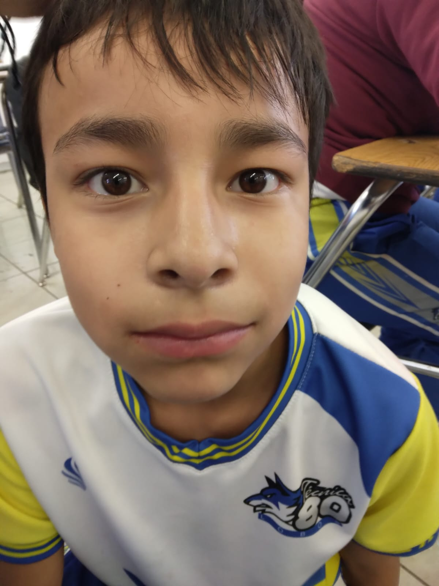
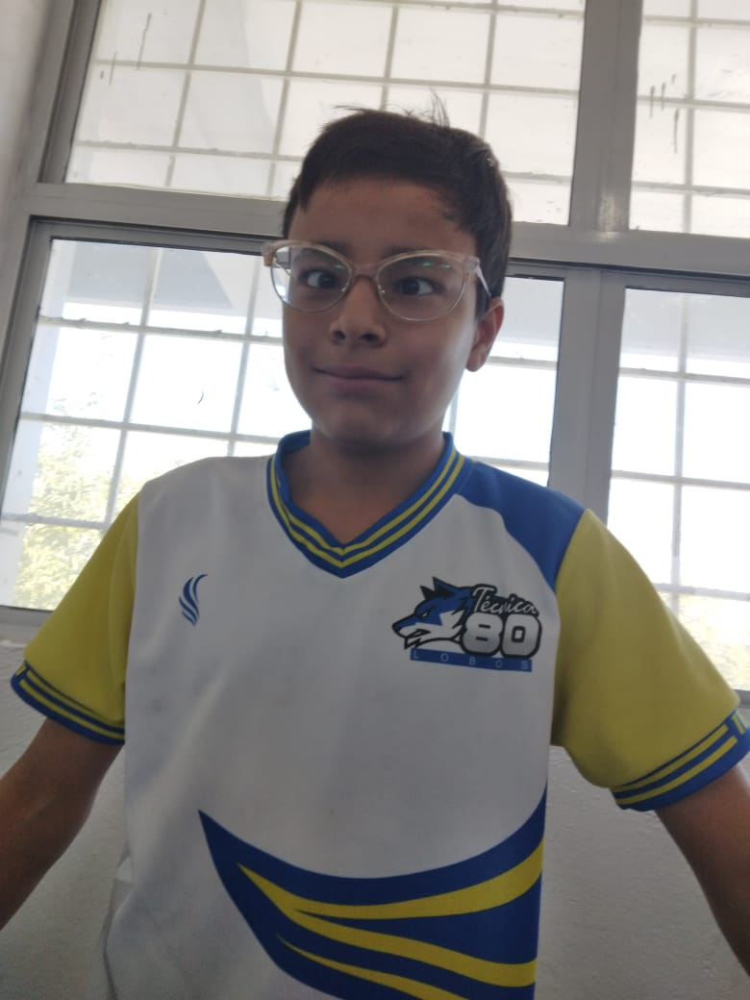
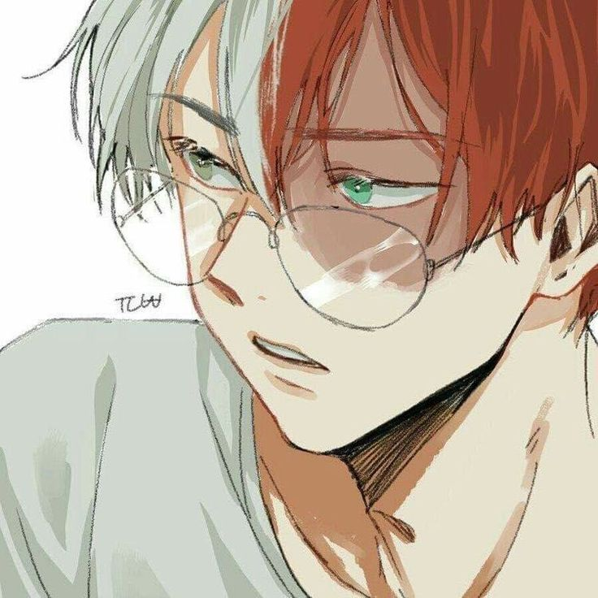
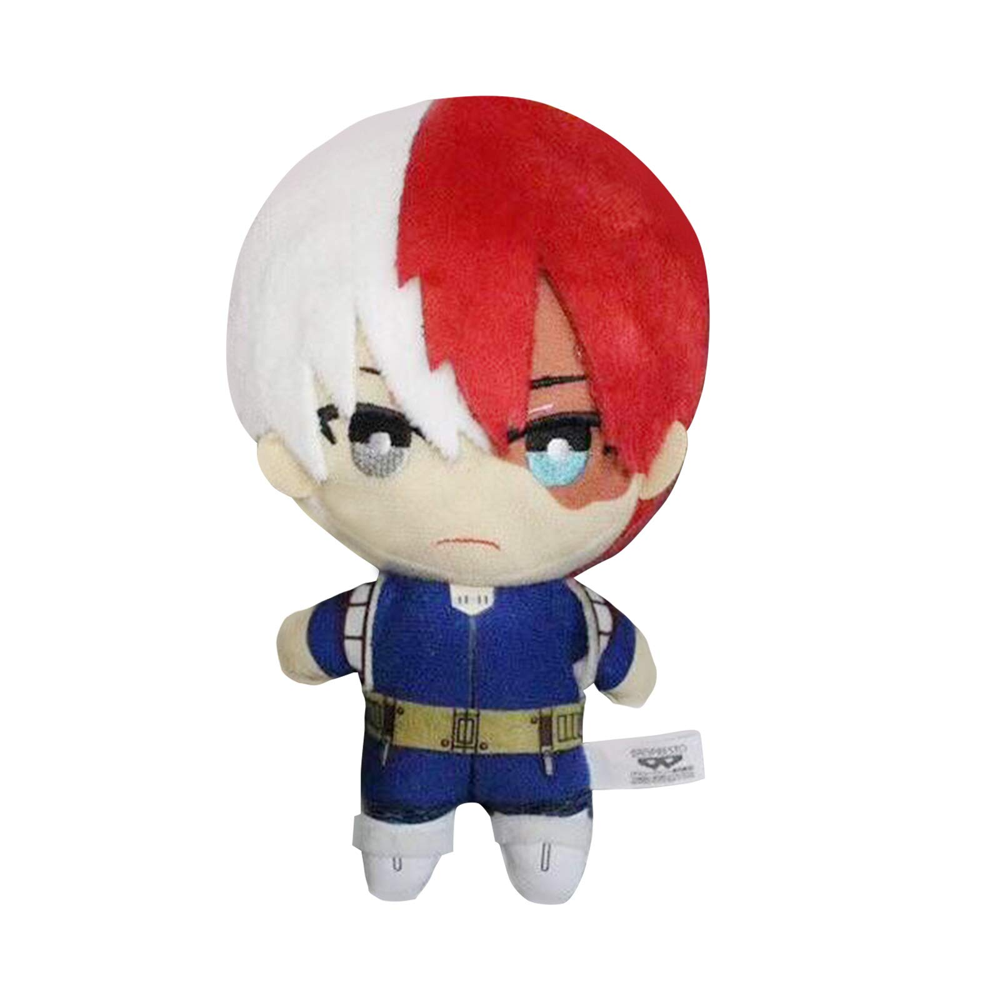

Muerta por su mamá
El día 18 de Septiembre del 2023, Lupe/Zaita asistió a clases, revivió, y por causa de su revivición, se establecen las siguientes disposiciones:
- Las cosas de Todoroki serán dejadas donde están.
- El cuarto de Lupe/Zaita seguirá siendo de ella.
- Su dinero será repartido a sus amig@s de la siguiente manera:
- Irving: 4%
- Jade: 23%
- Emiliano: 0%
- Melody: 23%
- Oscar la Rosca: 1%
- Alex: 50%
- Su fundación de Jirafas 3mil/Familia de Irving, seguirá en pie.
Atentamente, Lupe/Zaita
Firma del Autor: 
PRUEBAS DEL ASESINATO:



